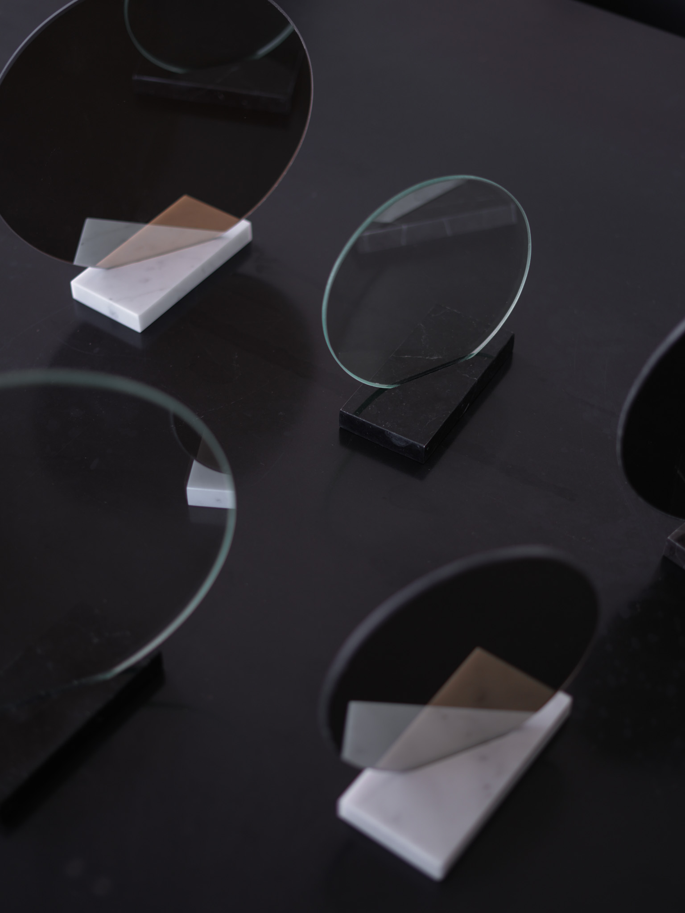
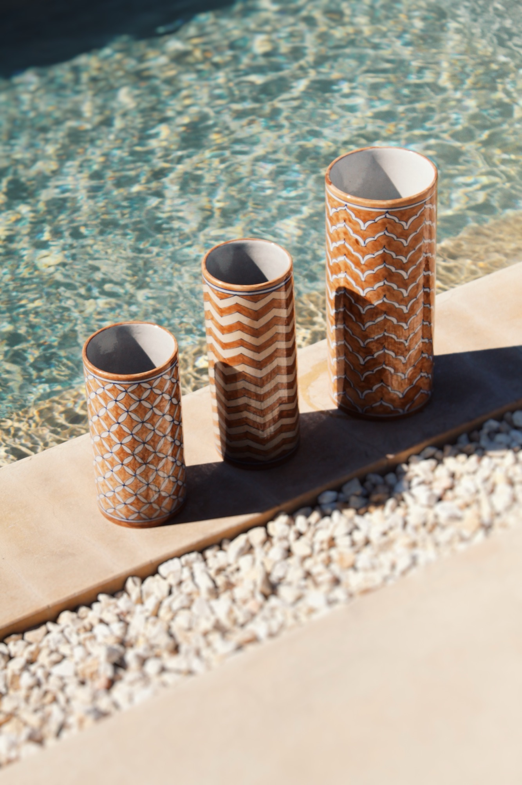
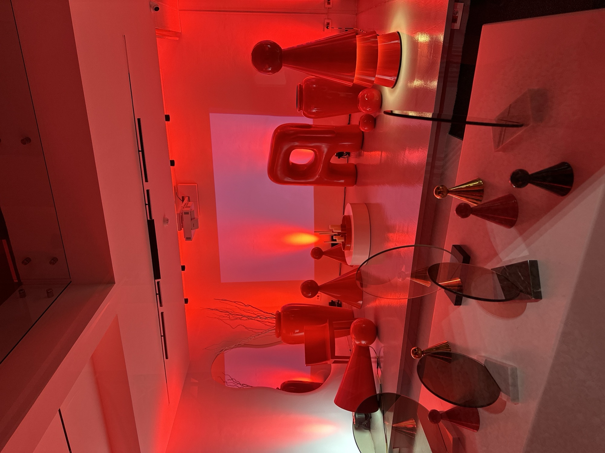
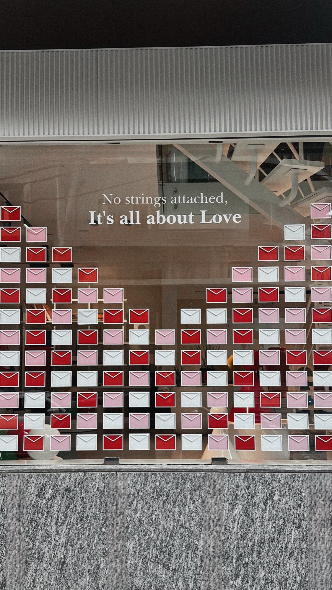
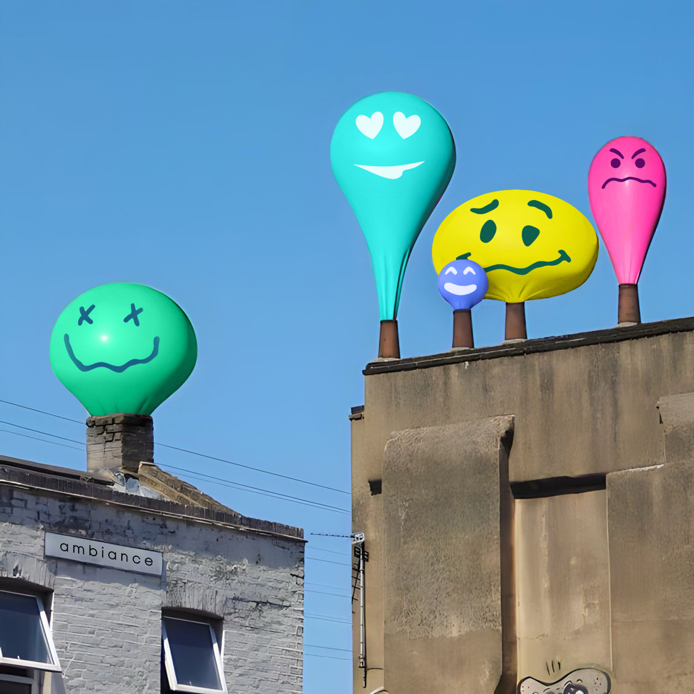
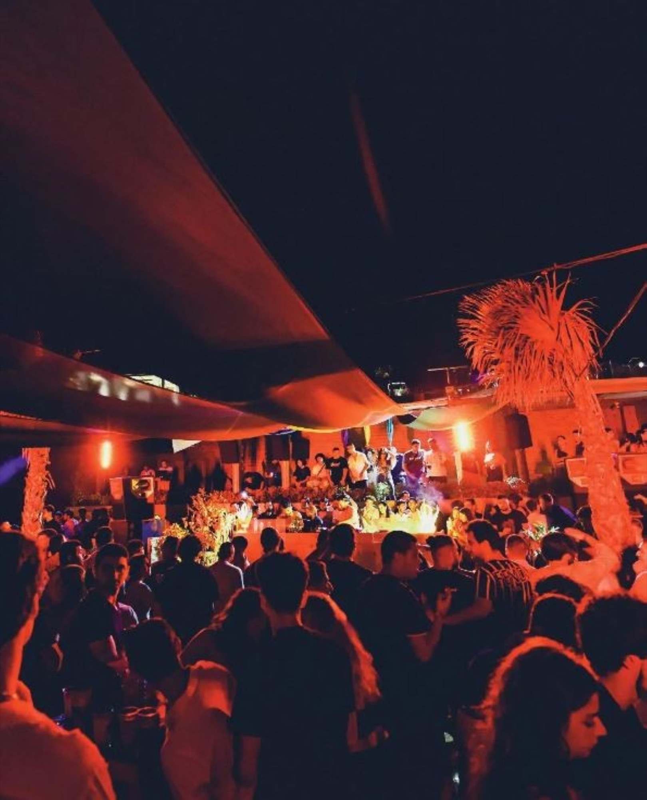

Ambiance — Christmas

Ambiance — Winter

Ambiance — Summer

Ambiance — Spring



Boutique — Christmas

Boutique — Valentine

Ambiance — Emozee

Ambiance — Hue

Peachpuff — Summer

Blubay — Nightlife
Plastik — RoadsterCampaign Production
Plastik — AsteriCampaign Production
Eloria — LaunchArt Direction
Ambiance — ChristmasSet Design
Ambiance — WinterSet Design
Ambiance — SummerSet Design
Ambiance — SpringSet Design
Ambiance — AutumnSet Design
Ambiance — EmozeeCampaign
Ambiance — HueCampaign
Boutique — ChristmasSet Design
Boutique — ValentineSet Design
Pinch Moi — The GardenArt Direction
Peachpuff — SummerSet Design
Blubay — NightlifeArt Direction